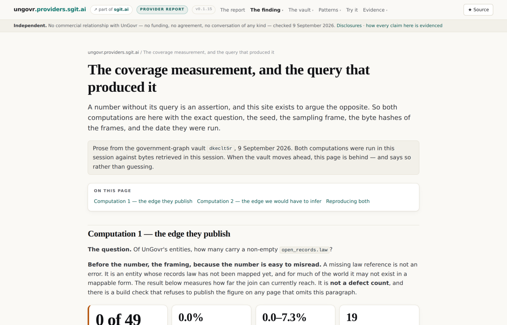
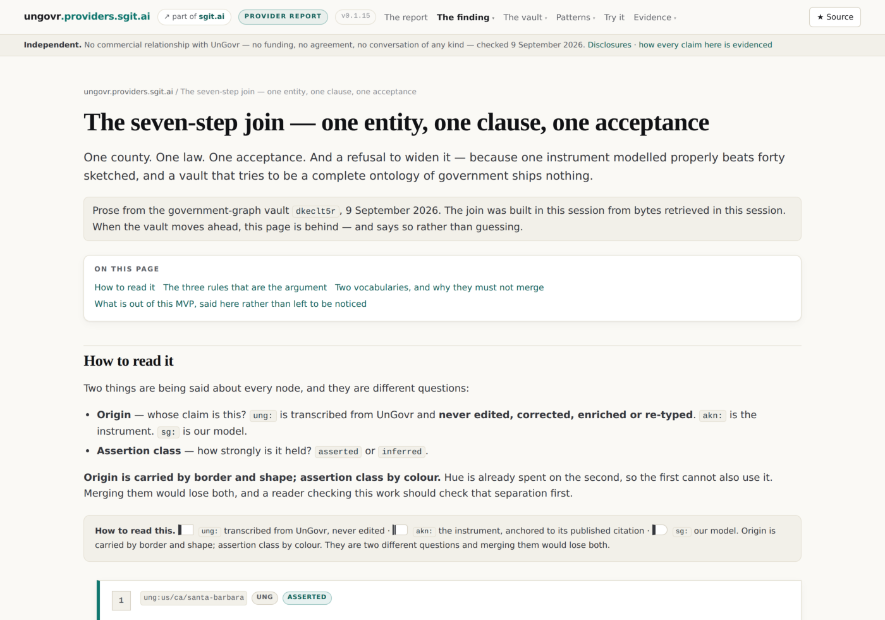
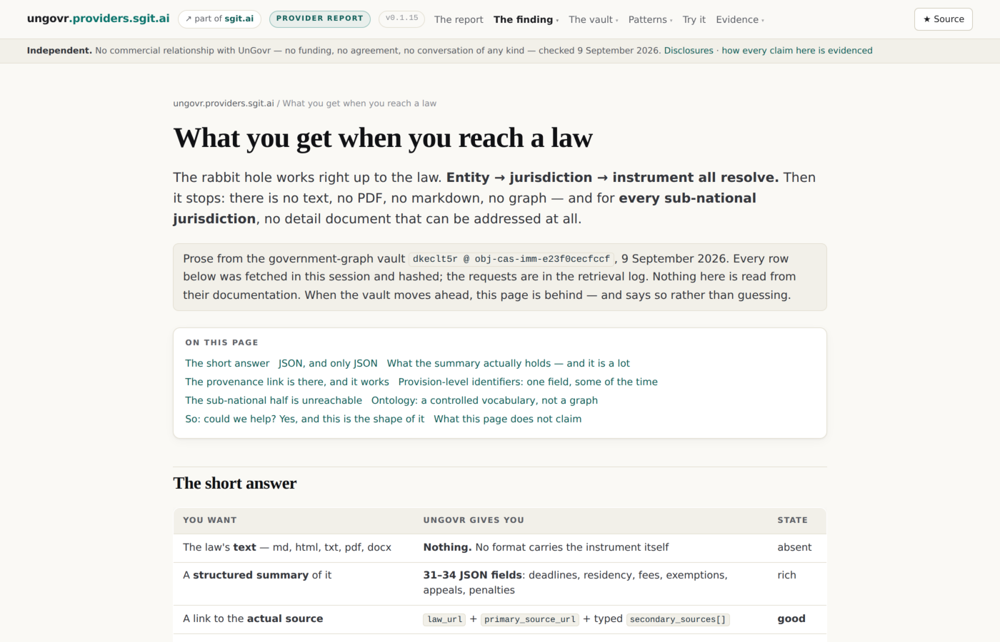
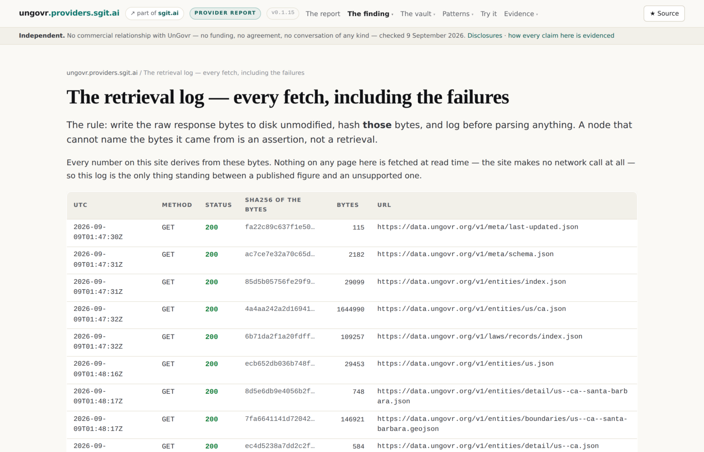

Independent. No commercial relationship with UnGovr
— no funding, no agreement, no conversation of any kind — checked 9 September 2026.
Disclosures · how every claim here is evidenced
UnGovr publish 327,138 government entities across 205 countries — hierarchy, boundaries, domains, websites — and 398 open-records laws, free, under CC BY 4.0, with no credential for most of it.
Their stated purpose is helping a person reach their government. For that, the data is shaped exactly right.
Everything that follows is about what happens when you want to do the next thing with it.
The report itself: nine contract sections, every claim carrying the state it earned.
Notes. Lead with this. A report on a nonprofit's public good that opens with the gap has already lost the room, and it would also be the wrong emphasis: the Atlas is the achievement, the missing edge is one hop.
What we learned about UnGovr · slide 2 of 10
The finding: 0 of 49
In a seeded random sample of 49 entity-detail documents across five strata, three countries and seventeen entity types, not one carried a non-empty open_records.law — including six US states whose records laws are in UnGovr's own corpus.
95% Wilson interval: 0.0 – 7.3%.
A missing law reference is not an error. It is an entity whose records law has not been mapped yet, and for much of the world it may not exist in a mappable form. The number measures how far the join can currently reach. It is not a defect count.

Computation 1, with its sample design and its Wilson interval — not a defect count.
Notes. Never show this number without the last paragraph. The site has a build check that refuses to publish the figure on any page that omits it.
What we learned about UnGovr · slide 3 of 10
The field is designed. It is just empty.
open_recordsis in UnGovr's published JSON Schema, as an optional property of entity_detail: an object with one string member, law.
So this is not an oversight in the model. The join point exists and is unpopulated.
That distinction is the whole difference between "they did not think of it" and "they thought of it and have not filled it in yet", and only the second one is true.
open_records appears in exactly one place: the per-entity detail document. One HTTP request each. It is in no bulk surface, which UnGovr's own OpenAPI states — the full-depth index is "a compact record ({slug, name, type, parent_slug?, population?})".
A census of 327,138 entities is 327,138 requests against a free tier of 100 a day:
about 9 years, or $327.14 metered.
That is why the number above is a sample with an interval and a published seed, rather than a total. The brief that commissioned this work asked for a census. It could not have produced one.
The same edge, inferred by the longest law-corpus jurisdiction that is a path-prefix of the entity slug, reaches 96.6% of California's 16,071 entities.
us/ca/santa-barbara/spd/goleta-west-sanitary-district
us/ca/santa-barbara
us/ca <- longest match: California Public Records Act
us (Freedom of Information Act - the shorter, wrong answer)
The join is one derivable hop away, over data they already publish, with a two-line rule.

The seven-step join, filterable by origin, with the provenance of every node.
Slug hierarchy is geography. Records law is jurisdiction. They coincide for general-purpose local government and come apart for interstate compacts, federal categories, tribal nations, regulated utilities and charter schools — exactly the bodies a requester most often wants.
So sg:resolvesTo carries an assertion class, not a confidence score. UnGovr did not make this claim, and rendering it as though they had would be a lie about the source.
Notes. This is the slide that earns the two-channel rendering in the graph. Origin by shape, assertion by colour, never merged.
What we learned about UnGovr · slide 7 of 10
Below the law, nothing is addressable
The CPRA record is better than expected — initial_response_days: 10, extension_days: 14, private_right_of_action: true, fee rates, submission methods, required elements. Somebody read the statute and modelled it.
But Gov. Code § 7922.535(a) — the clause that creates the duty — exists only as prose inside a free-text notes field. No provisions array, no clause identifier, no byte range.
You can cite the Act. You cannot cite the clause, so you cannot attach evidence to it.

What UnGovr hands you when you reach a law — and the 254 you cannot reach.
The OpenAPI document declares the whole Open Data API CC BY 4.0.
The AI-law payloads carry their own licence block — "UnGovr Data License (non-exclusive, by agreement)" — whose grant field reads "No license is conveyed by receipt of this file."
The specific term governs. A consumer who reads only the OpenAPI licence and redistributes what they fetched would be wrong, and would have had to open a payload to find out.
That corpus is described and measured in this vault and stored nowhere in it.
Notes. This is the finding with the most consequence for anyone building on the API, and it is the one that changed what this vault is allowed to hold.
What we learned about UnGovr · slide 9 of 10
The one that cost us a link
The API's 401 advertises OAuth Protected Resource Metadata in WWW-Authenticate — the discovery an MCP client follows.
The same valid key returns 200 as X-API-Key and 401 as Authorization: Bearer, byte-identical to anonymous.
A client that trusts the header over the documentation fails open into anonymity.
$0.00. 76 requests inside a free tier of 100 entity requests a day per IP.
No 402 was ever returned, so everything about the payment path is read rather than run — and is badged docs on the site for exactly that reason.
The cheapest finding in this deck is also the most useful one: putting open_records into the bulk files would make the coverage of that edge knowable to everybody, at no cost to anyone.

Every request, with the sha256 of the bytes it returned. The 404s are rows too.
These slides are rendered from 01__what-we-learned.md, republished byte for byte from the vault. The live decks — the same file, parsed by the vault's own app — are in the Decks view of the vault, which moves the moment the vault does. This page moves when the site rebuilds.